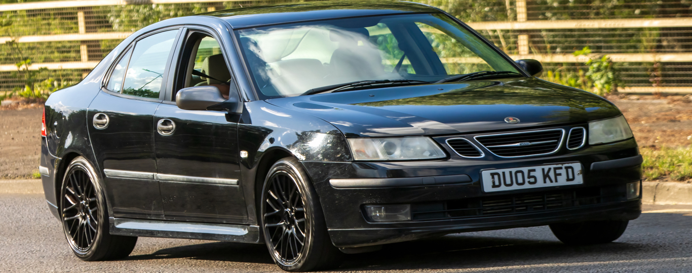

Welcome to Saab History
What we do
This site provides a history of the Swedish company Saab's attempt at entering the car manufacturing space. Their ups and downs, their incredible innovations, and their eventual downfall.
Common questions
- What happened to Saab?
After 65+ years, the Saab Automobile company filed for bankruptcy in 2011 and by mid 2012 all of their manufacturing rights and factories had been sold to other companies.
- When did Saab make their first car?
The Automobile devision was founded in 1945 and four years later in 1949 the company released their first car, the Saab 92